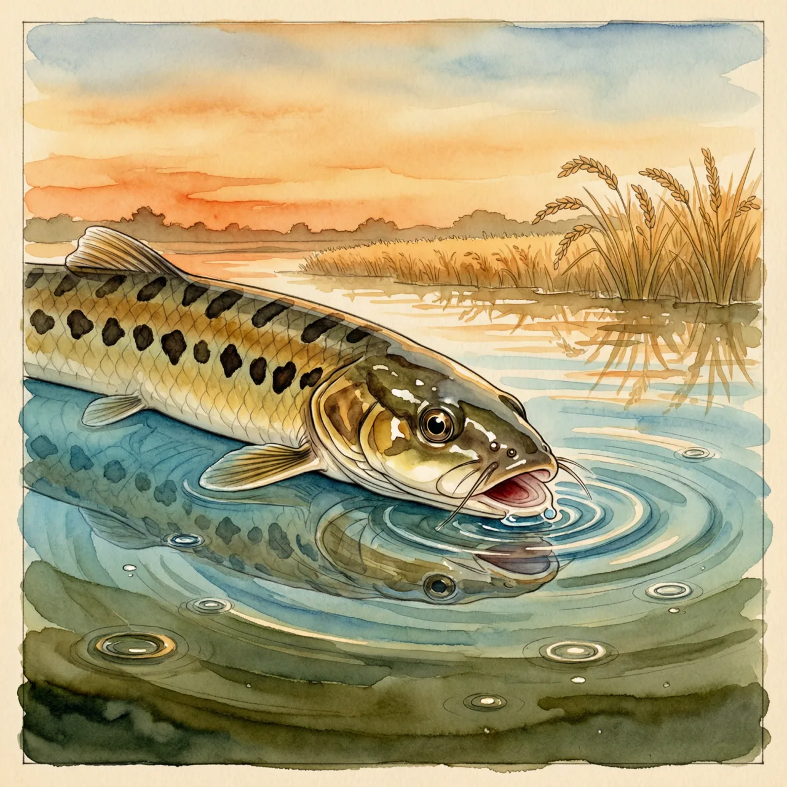
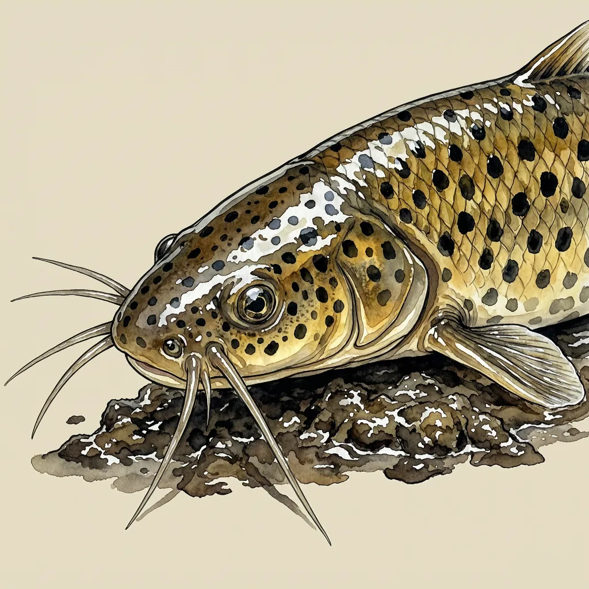

泥鳅生活在东北亚的稻田、池塘与沟渠里，体色斑驳金褐，嘴边长着10根触须。水中缺氧时，它会浮到水面吞入空气，由肠壁完成气体交换，等于自带第二套呼吸器官；水温低于5℃或高于30℃时，则潜入泥层休眠。气压降低时，它会变得格外活跃。
嘴边十根触须朝前探着，一寸寸碾过稻田底部的软泥，翻出蠕虫、小型甲壳动物和落水昆虫。泥鳅的生活圈是东北亚的浅水水体：缅甸、朝鲜、日本，以及中国从辽河向南直到云南的东部水域，包括四川、湖北、湖南、重庆；沟渠、池塘、稻田和湖泊里都有它，香港、台湾也不缺，浙江舟山是它的模式产地。它还被人类引进到夏威夷等地，并留下了造成不利生态冲击的报告。这类水塘入夏能热过30℃，入冬又能冷到5℃以下，溶氧说跌就跌。泥鳅敢住在这种地方，是因为手里留着后路。
这套后路长在肠子上。泥鳅能用鳃、肠和皮肤三种途径呼吸，其中肠道只在真正缺氧时才上岗：水里的氧气不够，泥鳅就把身体探向水面，吞一口空气进去，让它在肠壁上完成气体交换。另一招是对付温度。水温低于5℃或高于30℃时，泥鳅会潜入泥层中休眠，躲开水塘里最冷和最热的时段。呼吸和休眠这两件事，泥鳅都不完全指望水。
泥鳅性情温和，平时贴着水底和泥面，一副不起眼的样子。可它对气压的变动敏感得反常：气压一低，泥鳅会变得十分活跃，动静比平时大得多。那十根触须负责摸清嘴边的底质，头顶上气压的起伏，则直接写进了它的活动强度里。又因为身体滑、难以捕捉，人们叫它鰗鰡；在民间，这个词还被拿去形容调皮、溜得飞快的小孩。
